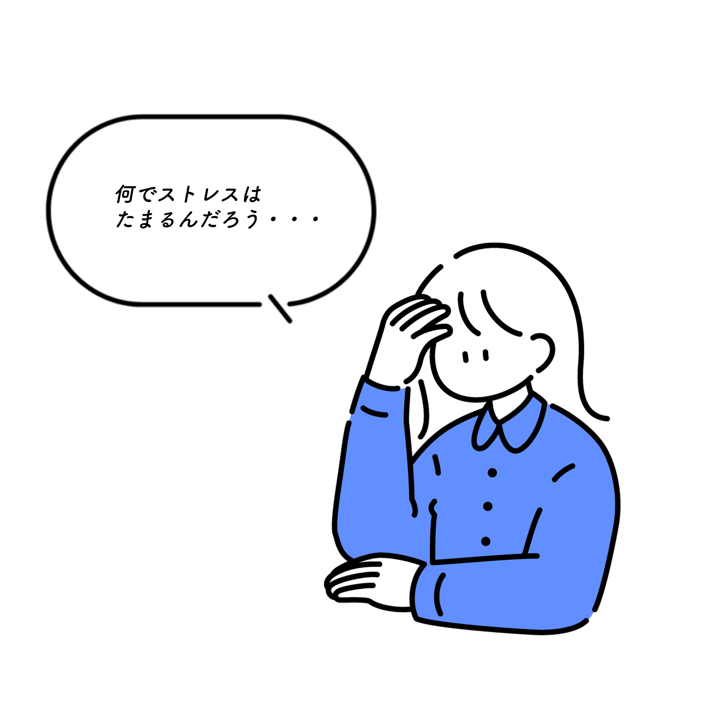

Home 初めまして。このサイトでは人の感情がなぜ生まれるのか、心身ともに健康でいる為にはどうしたらよいのか、そのコントロール方法について五人の生徒とともに勉強していきましょう！一緒に「楽しく」 学んでいけたらと思います。  まず、人間の感情は基本的に五つあります。 step1 ここから更に46つの細かい感情に分けられます。このサイトでは、実際にストレス発散方法を体験した私なりの感想を載せていきたいと思います。 step2 誰と？ このサイトでは、五人のキャラクターが貴方のパートナーとなってサイトについて説明をしてくれます。一人で学ぶよりも楽しくなるでしょう。 step3 最終的に 楽しく学び，心も体も健康に過ごせるようになりましょう！ 感情 嬉しい・・・よろこぶこと。うれしく思う心・気持ち。また、満足な思い。 悲しみ・・・悲しい気持ちや心。 悲嘆。 「―の色を浮かべる」「―に暮れる」 「怒り」と他の感情が入り混じった表現・描写・類語. 白々とした空虚感が黒い怒りに変わる おそれること。恐怖。悪いことが起こるのではないかという心配。懸念(けねん)。 何となくいやだと思う気持ち。いやき。 キャラクター キャラクターのプロフィールを掲載 キャラクターのプロフィールを掲載 キャラクターのプロフィールを掲載 キャラクターのプロフィールを掲載 Contact ご連絡はこちらからお願いします！（フォームは只今準備中です。）